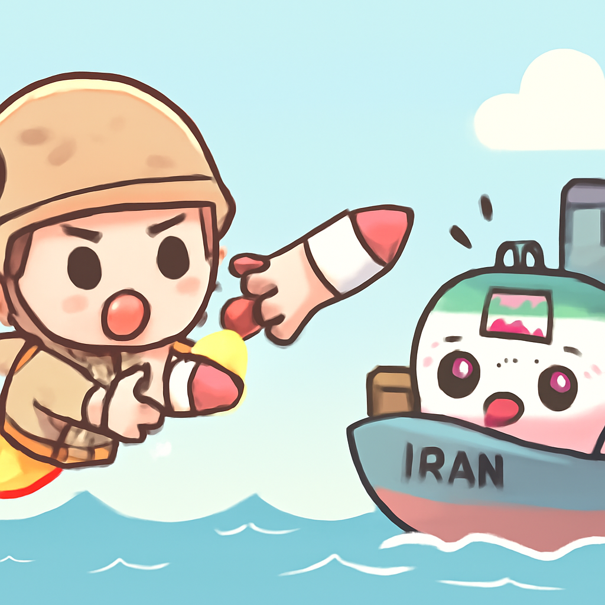
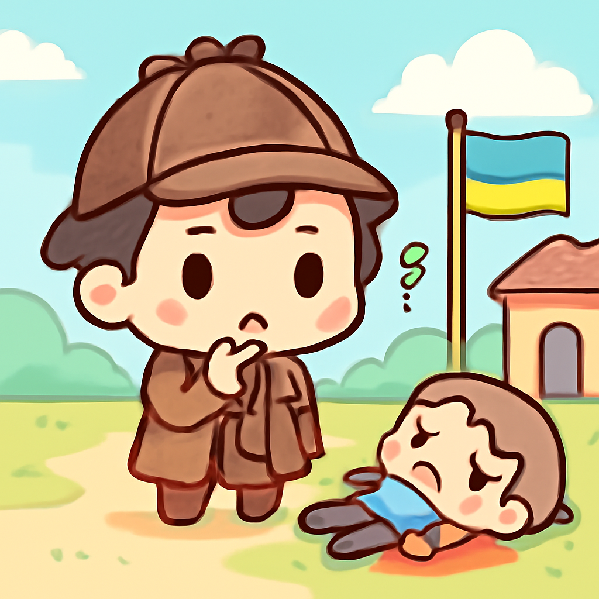

其一 · 伊朗霍爾木茲海峽 · 美國空襲伊朗油輪
美國在霍爾木茲海峽對伊朗發動空襲

美國於霍爾木茲海峽對伊朗進行空襲，目的是要對最近的油輪襲擊報復。伊朗則警告將採取強烈措施回應。這次衝突的升級可能會影響全球油價，讓大家心裡直打鼓。
🔗 原始新聞 ↗
2026-07-08 · 以古觀今，以笑抗愁
美國在霍爾木茲海峽對伊朗發動空襲

美國於霍爾木茲海峽對伊朗進行空襲，目的是要對最近的油輪襲擊報復。伊朗則警告將採取強烈措施回應。這次衝突的升級可能會影響全球油價，讓大家心裡直打鼓。
🔗 原始新聞 ↗
法國極右派領袖勒龐將參選2027總統
法國極右派的國民集會黨領袖勒龐宣布將參加2027年總統選舉，這個消息讓不少人又開始關注法國的政治生態。她的參選能否改變遊戲規則，還得看她的支持者們能否踴躍投票。
🔗 原始新聞 ↗
以色列監獄內醫生遭到嚴重虐待
在加沙，被拘留的醫生阿布·薩菲亞在以色列監獄中被人重創，律師表示傷勢嚴重，甚至讓他無法辨認。這起事件引發了國際社會對人權問題的關注，讓人不禁想問：人權究竟是什麼？
🔗 原始新聞 ↗
馬克龍訪問大馬士革期間發生炸彈爆炸
法國總統馬克龍在大馬士革訪問時發生炸彈爆炸，造成18人受傷。此事件不僅是對訪問的考驗，也讓人反思在戰火中，和平的希望依然存在，雖然有時候它就像一顆炸彈。
🔗 原始新聞 ↗
在烏克蘭找到藍星炸彈事件嫌犯的屍體

烏克蘭警方發現了涉嫌在摩納哥炸彈襲擊事件中負責的嫌犯安娜斯塔西婭·貝雷佐夫斯卡的死因，這讓很多人不禁想問，這場戲究竟是怎麼演下去的。
🔗 原始新聞 ↗